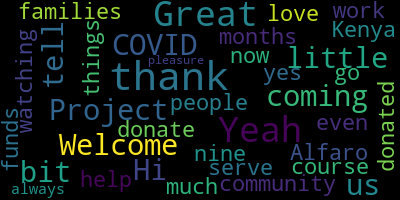

[Callahan]: Hi, I have Kenya Alfaro here with the Welcome Project. Thanks for coming. Hi, yes, thank you for having me. Of course. Yeah, I would love it if you can just tell us a little bit about the Welcome Project and the community that you serve.
[SPEAKER_02]: Sure. So the welcome project we are an immigrant nonprofit based in the city of Somerville but we service immigrant families throughout the metro North Boston area. And our mission is just to build the collective power of immigrants that they can participate in community decisions, whether it be local government schools or their own just small community neighborhoods. And we do that through a variety of different ways and services. Some may be our English classes, our youth programs, advocacy and organizing, and so just a lot of different services that help immigrant families.
[Callahan]: Great. Can you tell us a little bit about how those families have been doing during COVID and even now that we're, what are we, nine months into COVID?
[SPEAKER_02]: Yeah, sure. I think very early on, we were getting record data, I would say, of how deeply impacted our immigrant communities were by COVID. Very early on in March, we started hearing of folks losing completely their job, not knowing when they were going to go back. For some of them, they were just losing the sole providers of the families because they were no longer working. Data was also coming out that was saying that folks from immigrant families, and particularly Central Americans and Haitians, Brazilians, are sometimes three to four times more likely to contract COVID to end up in the hospital. We're hearing a lot of personal cases as well from different families. And through since since then we we've just been hearing a lot of cases of folks not being able to pay their rent their utilities not able to get some food food insecurity was really really really at an all time high I think in the years that I've been at the welcome project. And I, you know, for the most part we've stayed at the same, the same place. Some people have been able to go back to work. Most people have not, especially since many parents now have their kids at home, learning remotely. Many of them might just have not been able to go back to work, not sure when they'll be able to go back to work, really. And on top of that, they're still worrying about food. They're worrying about their kids learning at schools. They're not sure when this is going to come to an end. And so in one way, it's gotten a bit better for folks who have been able to go back. Now that the schools are back, maybe there's some different services that weren't there in the summer. But we're really back where we were in May. It's an unfortunate reality, but that's where we are. And I think everyone is just really hoping and praying that things get better soon. But it seems to somehow be getting worse as the numbers are rising. And so we're praying for an end in sight, hoping and really just trying to see the best way that we can help them along the way.
[Callahan]: And how can people watching this help? How can they donate or do other things? And then where do those donated funds go?
[SPEAKER_02]: Sure. So one of the ways in which we're always looking for folks to help us is if you or anyone you know speak Spanish, Portuguese, or Haitian Creole, that is a great, great, great help to our work. We are always looking for folks to help us out with any outreach, with just personal phone calls that we're doing to either our students or just community members to really assess their needs. And you can also donate to our organization by going to the welcomeproject.org. and there's a donate link right on top where you can find to donate to different funds or however you would like to donate. In April, we also started the Immigrant Assistance Fund, which all of those funds from there are going to help either with partial rental payments, utility payments, or other food assistance that might be needed. So you can know that if you are donating right now, those funds will be helping to families that are still currently in need, still currently don't have the month to month ability or access to pay for a lot of essential needs. And so that's what that's kind of what we're doing right now and what we foresee doing for at least a couple more months.
[Callahan]: Yeah. Yeah. Great. Thank you so much for the work that you're doing. And thanks for coming on. It's always a pleasure.
[SPEAKER_02]: Yeah, of course. Thank you so much.
[Callahan]: Great.
|
total time: 0.65 minutes total words: 121  |
|||
{kind=link}